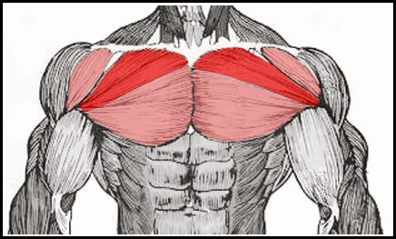
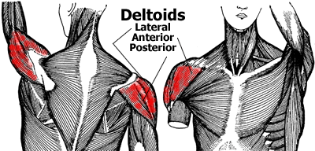
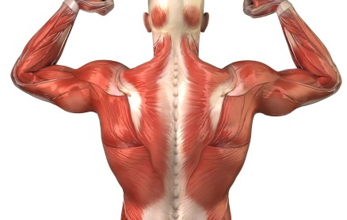
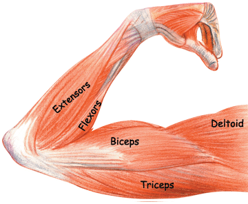
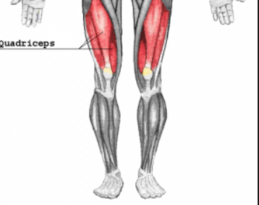
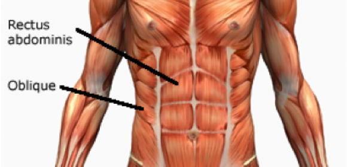

Chest exercise

Since your pectorals are a large muscle group you need to train them with heavy resistance and progressive overload.What this means is that you have to lift heavy in the 3-8-rep range for the majority of your chest exercises.Despite what the guru’s and bodybuilding magazines say, this is how you build mass.The best exercises include the dumbbell bench press, barbell bench press, dumbbell incline bench press, and the barbell incline bench press.
Shoulder exercise

When it comes to building an aesthetic and powerful looking physique, nothing is more important than big, broad shoulders.
A well-formed set of boulders is the foundation of the V-Taper that makes for a head-turning physique.
The V-taper is achieved with muscular shoulders, fully developed lats and a small waistline.
Many shoulder routines lack variety, and only develop the middle section of the deltoids.
If you want jacked shoulders, it’s time to start focusing on developing all three sections of the deltoid muscles.
Back exercise

Most gym goers don’t put enough emphasis on a killer back workout routine – nothing showcases a powerful physique more than a barn house door back.Having a strong and muscular back puts your physique together and gives you a powerful base.Not to mention if your back is lacking, you will be more susceptible to injuries during training.Having a weak back actually holds you back from building lean muscle mass all over your body because you will be weaker on every single compound exercise such as the deadlift, bench press, squat, and barbell row.
Arm exercise

Have your arms not grown in seemingly forever? Day in and day out, I see the same guys doing the same arm routine.And guess what, their arms are still pretty tiny.It’s odd how so many gym goers keep doing the same thing over and over despite progress being nonexistent.These guys spend too much time doing too many sets and getting little to no results.When training your arms, sometimes less is more. Remember, the biceps and triceps are some of the smallest muscle groups in the body and don’t require a lot of work to grow.
Leg exercise

Each leg workout has a different focus. Find one that suits your needs for the next 4-8 weeks before switching to another specialized program.
Do as many warm-up reps as you need, but never take them to muscle failure.
Choose a weight that allows you to reach muscle failure by the target rep listed.
If you have a spotter, do a few forced reps on your 1-2 heaviest sets of each exercise.
Abs exercise

Having a ripped mid-section is one of the top fitness goals that people strive for year after year.Although many do it for the sake of appearance, having a developed core serves a crucial purpose as it provides stability and balance for all movement. Strong abdominal muscles can make the difference in lifting a little or lifting a lot. As it is the center for movement, your core muscles play a part in all exercises including proper posture and amount of volume.There is no question on how to achieve that sculpted six-pack. It takes hard work, the right training program, and a strict diet.